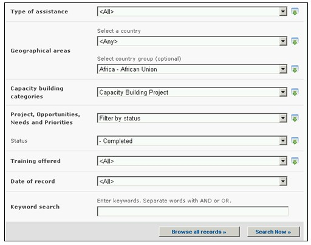

URL: http://bch.cbd.int/database/activities/
Bajo el Artículo 22 se requiere que las Partes cooperen en el desarrollo y/o fortalecimiento de los recursos humanos y la capacidad institucional para la eficaz implementación del Protocolo. A través del CIISB, las Partes y otros interesados pueden acceder a información sobre creación de capacidad y otros tipos de asistencia para la implementación del Protocolo. Adicionalmente, los gobiernos pueden ingresar sus necesidades y prioridades de creación de capacidad en el CIISB.
La búsqueda de información acerca de Creación de Capacidad puede obtenerse en el vínculo del menú Búsqueda de Información localizado en la barra de navegación, o en el vínculo ubicado en la barra izquierda de la página Búsqueda de Información, o en el vínculo del texto Creación de Capacidad en la misma página.

En la página Búsqueda de información en Creación de Capacidad el usuario puede buscar lo siguiente:
-
Proyectos de Creación de Capacidad en Bioseguridad;
-
Oportunidades de Creación de Capacidad;
-
Necesidades y Prioridades de Creación de Capacidad;
-
Cursos sobre Bioseguridad
En la página Búsqueda de información en Creación de Capacidad hay ocho cuadros para referenciar los criterios de búsqueda en la base de datos. Cada uno de éstos tiene un menú desplegable en el que se puede seleccionar el criterio de búsqueda. La búsqueda por defecto es el primer elemento que aparece en la lista desplegada. En la parte derecha de cada cuadro, un botón le permite al usuario activar selecciones múltiples. Una vez se está en el modo de selección múltiple, es posible agregar más criterios haciendo clic en el criterio y presionando al mismo tiempo la tecla Ctrl (Control).
 .
.
Cuadro 1 [Tipo de asistencia] permite al usuario seleccionar países o regiones que solicitan u ofrecen apoyo.

Cuadro 2 [Seleccione un país] Un menú desplegable presenta una lista de todos los países, de tal modo que los usuarios pueden seleccionar uno o más países específicos en cada búsqueda.

Cuadro 3 [Seleccione un grupo de países] Un menú desplegable presenta una lista que contiene las mayores agrupaciones geográficas y políticas de países y permite seleccionar solamente aquellos registros que han sido enviados por los miembros del grupo o grupos seleccionados.

Cuadro 4 [Categoría de creación de capacidad] permite al usuario limitar la búsqueda a categorías tales como proyectos de creación de capacidad, oportunidades de creación de capacidad, necesidades de país y prioridades y/o cursos de bioseguridad.

Cuadro 5 [Proyectos, Oportunidades, Necesidades y Prioridades] permite al usuario aplicar filtros según diferentes actividades de creación de capacidad con el objeto de restringir la búsqueda a los registros que están específicamente relacionados con el criterio de selección. Las categorías de filtro son: (i) Nombre del proyecto, (ii) Área de creación de capacidad, (iii) Estado de avance del proyecto, (iv) Tipo de agencia implementadora, (v) Organización, y (vi) Fuente de financiación.
Seleccionando uno o ambos criterios de filtro del menú desplegable se abren cuadros de búsqueda adicionales con un menú desplegable de opciones, cada una de los cuales está relacionada con el filtro seleccionado. Es posible utilizar múltiples filtros usando la tecla Ctrl. (Ej. Haciendo clic en el criterio relevante mientras se oprime la tecla Ctrl).

Cuadro 6 [Entrenamiento ofrecido] permite al usuario aplicar filtros por área temática y/o tipo de acreditación con el objeto de restringir la búsqueda a los registros que están específicamente relacionados con el criterio de selección.
Seleccionando uno o más criterios de filtro del menú desplegable se abren cuadros de búsqueda adicionales con un menú desplegable de opciones, cada una de los cuales está relacionada con el filtro seleccionado. Es posible utilizar múltiples filtros usando la tecla Ctrl. (Ej. Haciendo clic en el criterio relevante mientras se oprime la tecla Ctrl).

Cuadro 7 [Fecha del registro] permite al usuario que limite la búsqueda de acuerdo con la fecha en la que el registro ha sido ingresado al CIISB. El menú desplegable proporciona un número de opciones para limitar la búsqueda solamente a aquellos registros que han sido enviados dentro del período de tiempo seleccionado (Ej: ‘último día’, ‘último mes’, ‘último año’, etc.).

Cuadro 8 [Búsqueda por palabras clave] Brinda la oportunidad de utilizar palabras clave para restringir la búsqueda. El usuario puede utilizar la sintaxis estándar de palabras clave (combinación de los operadores Y/O) para buscar con múltiples palabras, o partes de palabras (Ej. “Importación O Exportación”). La búsqueda con palabras clave permite obtener solamente registros que contengan el texto exacto y no sinónimos que no hayan sido insertados (Ej: Una búsqueda con la palabra clave “Maíz” producirá una lista de registros que contienen la palabra “Maíz” pero no los registros que contengan “Zea mays”).

La página de búsqueda ofrece tres botones para obtener la lista de registros. El botón Busque Ahora (tanto en la parte superior como inferior de la interfase de búsqueda) permite al usuario activar una búsqueda basada en los criterios seleccionados en los cuadros de la tabla de búsqueda. Los resultados de búsqueda son ordenados alfabéticamente, por defecto, de acuerdo con el nombre de país. El botón Busque todos los registros (en la parte inferior de la interfase de búsqueda) permite al usuario obtener una lista de todos los registros en esta base de datos.

Las páginas de Resultados de Búsqueda poseen una ventana de ordenamiento arriba de la lista de los registros encontrados. Esta puede utilizarse para ordenar los registros de acuerdo con criterios específicos para esa categoría de información. Observe que los resultados cambiarán cuando el usuario ajusta los criterios de búsqueda.

Ejemplo. Un usuario desea identificar los proyectos de creación de capacidad que han sido finalizados en países Africanos. El usuario selecciona (i) Grupos Regionales del CDB - África en el cuadro Áreas geográficas, Grupo de país, (ii) proyecto de creación de capacidad en el cuadro Categorías de Creación de Capacidad y (iii) filtro por status en el cuadro Proyectos, Oportunidades, Necesidades y Prioridades. La selección del filtro abre un cuadro de Status, en el cual el usuario selecciona finalizado. Con la activación del botón Busque Ahora se obtienen los resultados ordenados alfabéticamente por nombre de país. La información acerca de cada uno de esos resultados puede obtenerse seleccionando el nombre del proyecto.
